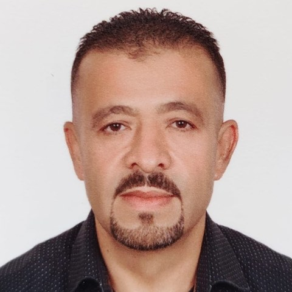

Teacher's Lighthouse
DR. A.SATTAR AMRI
Proven insights for impactful teaching & leadership
نصائح تربوية عملية للمعلمين وقادة المدارس

DR. A.SATTAR AMRI
Proven insights for impactful teaching & leadership
نصائح تربوية عملية للمعلمين وقادة المدارس